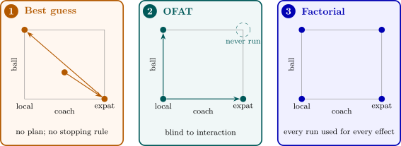
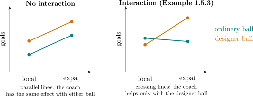

1.5 Strategies of experimentation
Example 1.5.1. The performance of a football team depends on many factors. Some of them may be
- (a)
- the coach (local or expatriate);
- (b)
- the type of boot (metal or plastic studs);
- (c)
- the time of playing (afternoon or night);
- (d)
- the type of ball (ordinary or designer);
and so on. How do we find the combination that gives the best performance?
There are three broad strategies.
- (i)
- Best-guess approach. Select an arbitrary combination of the factors, test it and see what happens. Then change the levels of one or two factors, guided by experience, and test again, and so on. This often works reasonably well when the experimenter knows the system well, but there is no guarantee of success, and no way of knowing when to stop or whether the best combination has been found.
- (ii)
- One-factor-at-a-time (OFAT) approach. Select a starting point, or baseline set of levels, for each factor. Then successively vary each factor over its range with the other factors held constant at the baseline levels. The results are summarised in a series of graphs, each showing how the response is affected by varying one factor with all the others held constant.
- (iii)
- Factorial experiment. The factors are varied together instead of one at a time: the runs consist of all (or a chosen subset of) the combinations of the levels of the factors.

The weakness of the OFAT approach is that it fails to consider any possible interaction between the factors.
Definition 1.5.2. Two factors interact when the effect of one factor on the response is not the same at the different levels of the other factor.
For two factors \(A\) and \(B\) at two levels each, write \(\bar y_{A^-B^-}\) for the mean response with both at their low levels, and so on. The effect of \(A\) at the low level of \(B\) is \(\bar y_{A^+B^-} - \bar y_{A^-B^-}\), and at the high level of \(B\) it is \(\bar y_{A^+B^+} - \bar y_{A^-B^+}\). The main effect of \(A\) is their average, and the interaction \(AB\) is half their difference: \begin {align*} A &= \tfrac 12\bigl [(\bar y_{A^+B^-} - \bar y_{A^-B^-}) + (\bar y_{A^+B^+} - \bar y_{A^-B^+})\bigr ] , \\ AB &= \tfrac 12\bigl [(\bar y_{A^+B^+} - \bar y_{A^-B^+}) - (\bar y_{A^+B^-} - \bar y_{A^-B^-})\bigr ] . \end {align*}
The definition of \(AB\) is symmetric in \(A\) and \(B\): it is also half the difference between the effects of \(B\) at the two levels of \(A\).
Example 1.5.3. In Example 1.5.1, suppose the mean goals per match for the four combinations of coach (\(A\): local \(-\), expatriate \(+\)) and ball (\(B\): ordinary \(-\), designer \(+\)) are
| ordinary ball | designer ball | |
| local coach | \(1.0\) | \(0.8\) |
| expatriate coach | \(0.9\) | \(1.6\) |
The effect of the coach is \(0.9 - 1.0 = -0.1\) with the ordinary ball but \(1.6 - 0.8 = +0.8\) with the designer ball, so \[ A = \tfrac 12(-0.1 + 0.8) = 0.35 , \qquad AB = \tfrac 12\bigl (0.8 - (-0.1)\bigr ) = 0.45 . \] The interaction is larger than the main effect: the expatriate coach is worth having only with the designer ball (Figure 3).
Now suppose the team ran an OFAT experiment from the baseline (local coach, ordinary ball), at \(1.0\) goals. Changing the coach gives \(0.9\), worse, so the local coach is kept; changing the ball then gives \(0.8\), worse again, so the ordinary ball is kept. The OFAT experiment concludes that the baseline is best, and never discovers the combination that gives \(1.6\).

The factorial experiment is the correct approach for dealing with several factors. It detects interactions, and it is also more efficient, even when there are none.
Proposition 1.5.4. Suppose there are \(k\) factors at two levels, no interactions, and errors with variance \(\sigma ^2\). An OFAT experiment that runs the baseline and the \(k\) one-factor changes, \(m\) times each, estimates every main effect with variance \(2\sigma ^2/m\) and uses \((k + 1)m\) runs. A balanced two-level factorial experiment achieves the same variance with \(2m\) runs. The OFAT experiment therefore needs \((k + 1)/2\) times as many runs.
Proof. In the OFAT experiment the effect of factor \(j\) is estimated by \(\bar y_j - \bar y_0\), the difference between the mean of the \(m\) runs with factor \(j\) changed and the mean of the \(m\) baseline runs, with variance \(\sigma ^2/m + \sigma ^2/m = 2\sigma ^2/m\). In a balanced factorial with \(N\) runs, half the runs have factor \(j\) high and half low, and its effect is estimated by \(\bar y_{j^+} - \bar y_{j^-}\), a difference of two means of \(N/2\) runs each, with variance \(2\sigma ^2/(N/2) = 4\sigma ^2/N\). This equals \(2\sigma ^2/m\) when \(N = 2m\). The ratio of run counts is \((k + 1)m/(2m) = (k + 1)/2\). □
The source of the saving is sometimes called hidden replication: in a factorial experiment every run contributes to the estimate of every main effect, whereas in an OFAT experiment each run contributes to the estimates of at most two. With \(k = 2\) factors the factorial needs two thirds of the runs; with \(k = 7\) it needs a quarter. (A full \(2^k\) factorial has \(2^k\) runs, which can be more than \(2m\); the fractional factorials of a later section remove that restriction.)
Questions on this section
Stuck on something here? Ask below and it stays attached to this topic.